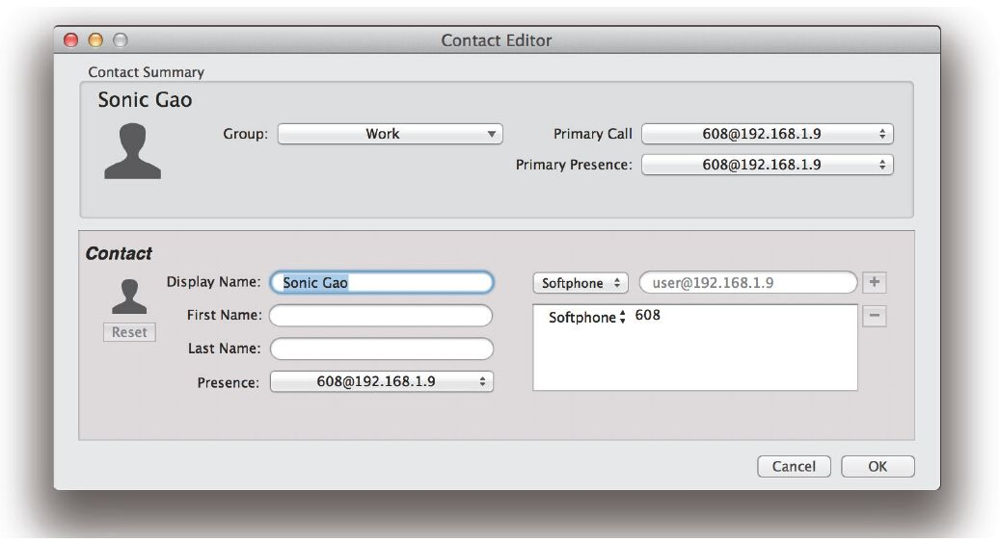
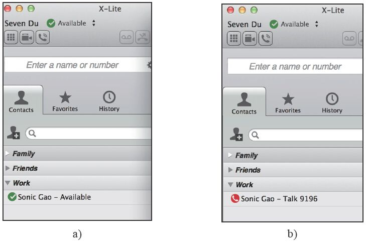
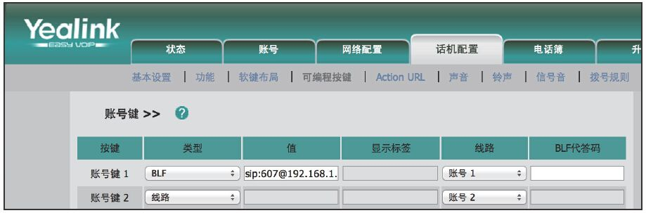
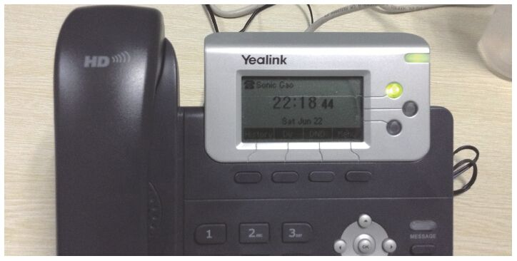

15.2 共享线路呈现
共享线路呈现（Shared Lines Appearence，SLA）也是企业应用中一个非常有用的功能。该功能在模拟话机中是没有的，只有SIP话机才能实现该功能。使用该功能可以在自己的话机上监视其他话机的状态，从而知道另一个电话是否处于忙或闲的状态。比如说在老板-秘书的场景中，如果有人打秘书的电话想找老板，而秘书转电话时碰巧老板的电话正在占线，就会导致转接不成功，耽误时间。而如果秘书事先知道老板的电话是否在忙，就可以直接判断是否要将电话转给老板，或者告诉主叫用户先等一会。FreeSWITCH就支持这种功能。在使用时应确认Profile中的设置开启了以下两项：
<param name="manage-presence" value="true"/>
<param name="manage-shared-appearance" value="true"/>
下面以Seven Du（607）和Sonic Gao（608）为例。607使用XLite注册。注册完毕后通过菜单项“Contacts”→“Add Contact”添加一个联系人608，并确保开启了Presence功能，如图15-2所示。

图15-2 在XLite中添加Presence联系人
添加完成后，主界面上就能显示联系人的状态了，如图15-3a所示，现在608处于注册状态，显示是绿色的Available状态（见图15-3a）。如果608正在通话，则会变为红色的Talk状态，图15-3b显示608（Sonic Gao）正在跟9196通话。
账号608是从一个亿联话机上注册的，该话机也支持线路共享功能。打开话机的Web设置界面，依次顺着菜单走到“话机设置”→“可编程按键”→“账号键”，如图15-4所示。

图15-3 XLite上的联系人状态

图15-4 在亿联话机上配置SLA
在图15-4中所示的页面上，选择账号键“1”，把类型由“线路”改为SLA，“值”里输入你想监视的话机账号，这里是“sip:607@192.168.1.9”，在注册“线路”一栏也选择账号1，保存设置后，话机上账号1对应的灯就会常亮，表示607是正常空闲的。如果607正在通话，该灯就会闪烁。如果15-5所示，话机上第一个灯是常亮或闪烁。

图15-5 话机灯的状态